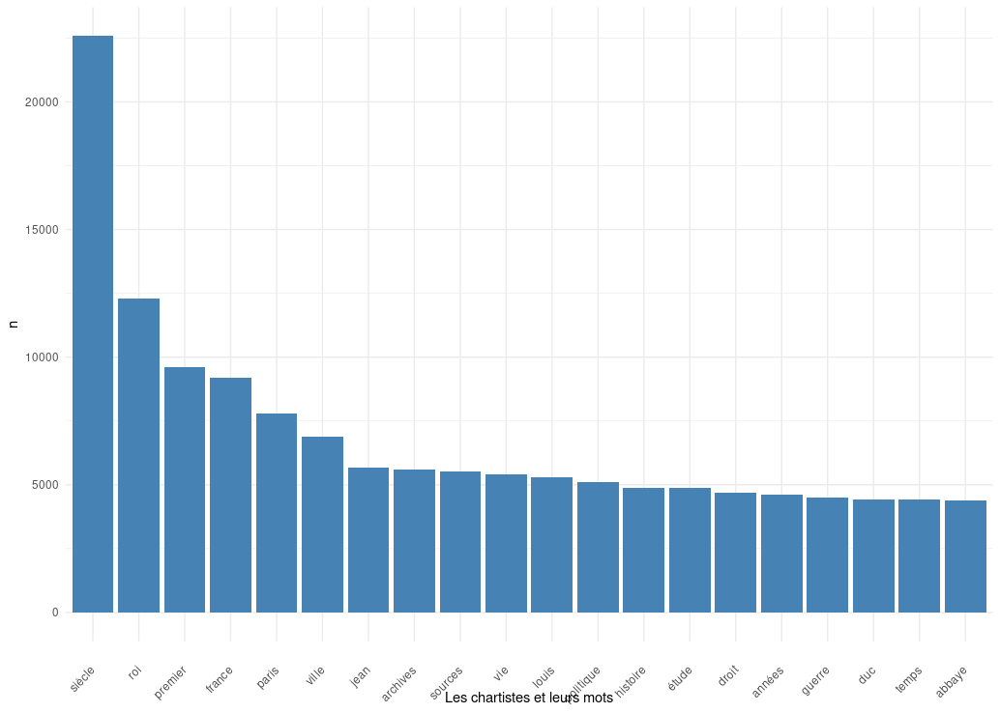
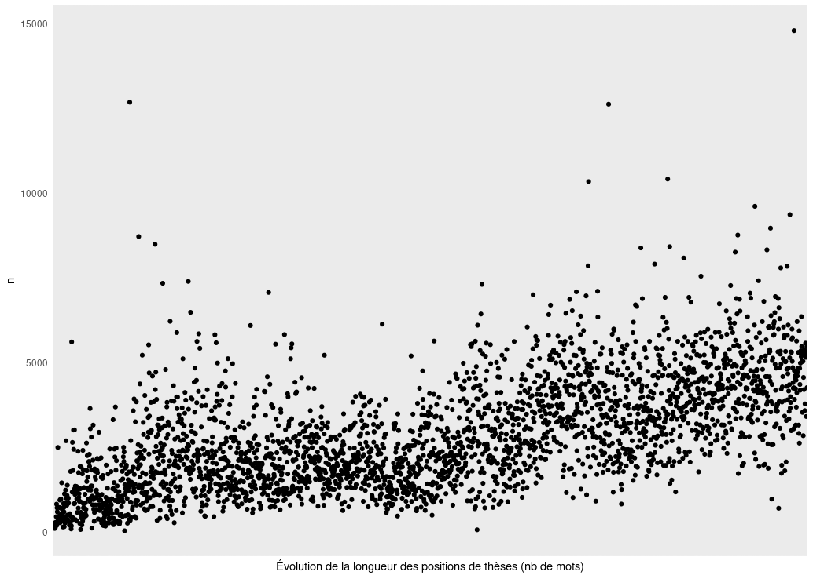
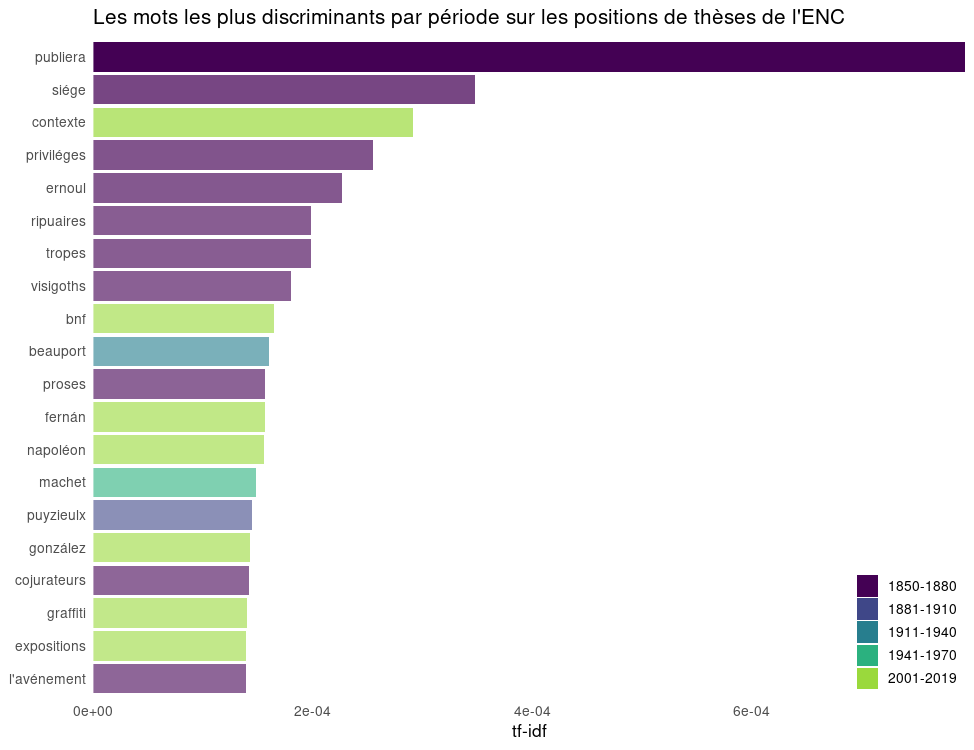

Introduction
L'objectif de cette partie proprement stylistique sur les positions de thèse était d'explorer d'un point de vue diachronique ce corpus textuel. Nous nous sommes penchés sur trois questions :
- Les thèmes ou concepts abordés dans ces positions de thèses.
- L'évolution de la longueur de ces positions, et donc de leur statut, de leurs codes ou de leur importance.
- Les idiosyncratismes stylistiques représentatifs de la langue employée par les chartistes au sein de ces positions et l'évolution de la langue et du "parler" scientifique et historique.
Résultats
Les mots du chartistes :
Analyse réalisée sur l'ensemble des positions de thèses (2950), représentant 8 336 760 mots.

Évolution de la longueur des positions des positions de thèses
Analyse réalisée sur l'ensemble des positions de thèses (2950), représentant 8 336 760 mots. L'axe des ordonnées donne le nombre de mots par position ; l'axe des absisses représente l'identifiant des positions ordonnés par ordre chronologique.

Les idiosyncratismes du chartiste :
Analyse réalisée sur l'ensemble des positions de thèses (2950), représentant 8 336 760 mots.
Procédure :
- Tokénisation
- Lemmatisation
- Étiquetage morphosyntaxique
Temps de traitement : 1h02'.
Livrable à exploiter : Motifs-idiosyncratiques-chartistes.csv
Quelques patterns intéressants :
- L'énumération des noms propres.
- L'utilisation des compléments de nom.
- La précision de la date d'un événement historique.


Les mots discriminants par période : l'évolution des intérêts chartistes.
Les analyses par TF-IDF (term frequency-inverse term frequency) permettent de mettre en valeur les mots qui sont les plus significatifs dans un corpus par rapport aux autres. Nous nous sommes ici fondés sur un découpage par période de trente ans. La périodisation est artificielle, certes, mais elle est déjà révélatrice de plusieurs choses.

